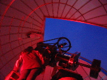
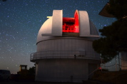

Need Information?
Astronomy Camp 2018

Dr. Don McCarthy
Astronomer &
Camp Director
Steward Observatory
The University of Arizona
933 N. Cherry Ave.
Tucson, AZ 85721-0065
Email: dmccarthy(at)as.arizona.edu

{kind=link}
Ms. Lisa Valentine
Director of Alumni Travel
The University of Arizona Alumni Association
1111 N. Cherry Ave.
Tucson, AZ 85721-0109
(520) 621-5333
1-800-BEAT ASU
(toll-free, outside Arizona)

{kind=link}


Join us for some real, fun science!
Astronomy Camp is all about discovering the Eureka moment! Under the dark skies of Southern Arizona, students of all ages explore "the heavens" with large telescopes and experience the excitement of scientific inquiry. The unique environments at Mount Lemmon Observatory immediately north of Tucson, Arizona, and Kitt Peak National Observatory just west of Tucson, provide outstanding views of the sky and encourage exploration. Astronomy Camp is an "immersion" experience that merges all four STEM letters: Science, technology, engineering, and numerical thinking ("math"). Since 1988, thousands of Campers worldwide have become real astronomers; operating research-class telescopes and technology, keeping nighttime hours, interacting with leading scientists, interpreting their own observations, investigating their own questions and curiosities, and most importantly having fun doing so.
{kind=link}
Astronomy Camp is not solely about astronomy and what's up in the sky; it is a unique investigation into both science and engineering sponsored by the Travel program of The University of Arizona's Alumni Association. This "science camp" is available internationally to both teenagers and adults. Our camps emphasize a hands-on learning approach and activities are driven by student involvement and interest. A prior background in astronomy is not required, neither is a connection with The University of Arizona. There are also opportunities available for educators, school groups, and Girl Scout trainers with an emphasis on how to inspire new generations of students to explore science, technology, engineering, and math. Girl Scout leaders are supported through NASA via the SETI Institute and previously through the NIRCam instrument program of the James Webb Space Telescope (JWST). The Camps are described in numerous publications. Personal accounts of Astronomy Camp experiences are published in The Reflector magazine of the Astronomical League, Universe Today, and Astromart.
Astronomy Camp seeks to motivate all students to further their education in science, math, engineering, and technical fields, not necessarily to become scientists. We are proud that former Campers earned advanced degrees in a wide variety of disciplines and that many others, including our staff, have become leaders in their fields.
Parents often ask why the teen Astronomy Camps are so "life-changing" and "inspiring" to their children. Educational research reveals several reasons:
- Real scientists as mentors
- A youth-centered, personal approach by the entire Astronomy Camp staff, treating youth as colleagues rather than children
- Authentic scientific inquiry with realistic projects involving modern research telescopes, technology, & equipment
- Student peers with a common interests in science and engineering
- A fun attitude toward learning, exploring ideas, and searching for answers
- The aesthetic qualities of the "sky islands" of Southern Arizona with dark skies
Home | Information | Registration | Articles | Links
All Images, Media and Content - Copyright © 2018 Astronomy Camp
Site Design by Jacob Omann. Maintained by Astronomy Camp. Updated December 19, 2017
All Images, Media and Content - Copyright © 2018 Astronomy Camp
Site Design by Jacob Omann. Maintained by Astronomy Camp. Updated December 19, 2017